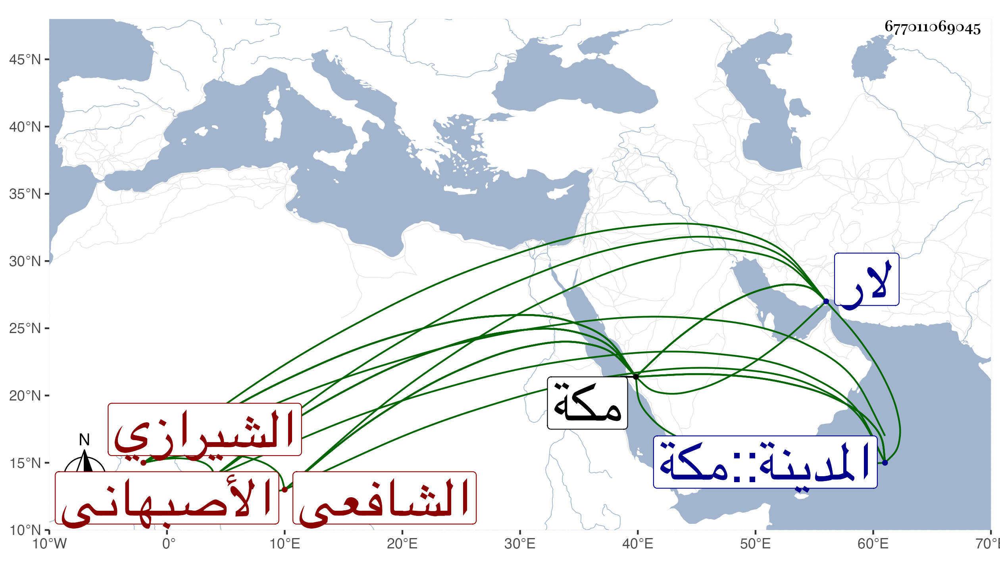

0902Sakhawi.DawLamic.ITO20230111-ara1.EIS1600.677011069045
Biography ID: 677011069045
410
محمد بن محمد بن علي بن محمود بن علي السنا العفيف بن القطب الأصبهاني ثم الشيرازي الشافعي نزيل مكة والماضي أبوه. لقيني بها في سنة ست وثمانين ولم يبلغ الثلاثين فلازمني مع أبيه وغيره دراية ورواية وهو فاضل في العربية ممن قرأ في القراآت على السيد قاضي الحنابلة بالحرمين واشتغل بالصرف والمنطق وغيرهما على أبيه وغيره في لار ومكة وغيرها وربما أقرأ الطلبة مع لطف وتودد وتقنع ولما سافر أبوه تخلف بمكة عنه ثم سافر وسمعت بوجودهما وأنا بمكة في سنة أربع وتسعين ثم لقيتهما في سنة ست بها وفي المجاورة بعدها ولازماني .
